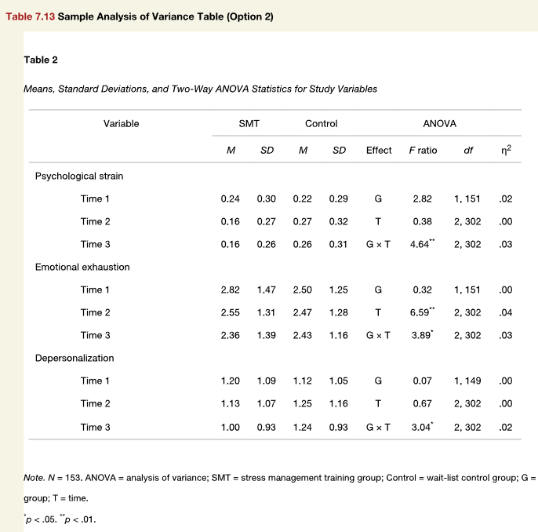

![]()
library(apa7)
library(flextable)
library(ftExtra)
library(tidyverse)
set_flextable_defaults(theme_fun = theme_apa,
font.family = "Times New Roman")Making tables in APA style (Part 13 of 24)
In this 24-part series, each of the tables in Chapter 7 of the Publication Manual of the American Psychological Association (7th Edition) is recreated with apa7, flextable, easystats, and tidyverse functions.
NoteHighlights
- Create column spanners with
column_spanner_label - Using
add_star_columnwithmerge = TRUEto create a starred column.
Figure 1
Screenshot of the APA Manual’s Table 7.13

Copying and pasting data into a table is not what happens in data analyses. To make things more realistic, I simulated data based on the means and standard deviations, and ran ANOVAs on the simulated data. I extracted the descriptives and the test statistics and formatted the resulting table.
I used the add_star_column function to apply stars to the F ratio column from the p column. By default, add_star_column adds a special column to the right of the selected column. The selected column is then right-aligned, and the star column is left-aligned so that the column appears to be merged. Sometimes this looks great, sometimes it does not. In this case, I opted to set merge = TRUE in the add_star_column, which actually merges the selected column and its star column, then applies the star_balance function, which pads the column with blanks spaces on the left so that the columns center properly.
set.seed(6)
# Make data
d_simulated <- "
variable Time Group M SD
Psychological strain 1.00 SMT 0.24 0.30
Psychological strain 2.00 SMT 0.16 0.27
Psychological strain 3.00 SMT 0.16 0.26
Psychological strain 1.00 Control 0.22 0.29
Psychological strain 2.00 Control 0.27 0.32
Psychological strain 3.00 Control 0.26 0.31
Emotional exhaustion 1.00 SMT 2.82 1.47
Emotional exhaustion 2.00 SMT 2.55 1.31
Emotional exhaustion 3.00 SMT 2.36 1.39
Emotional exhaustion 1.00 Control 2.50 1.25
Emotional exhaustion 2.00 Control 2.47 1.28
Emotional exhaustion 3.00 Control 2.43 1.16
Depersonalization 1.00 SMT 1.20 1.09
Depersonalization 2.00 SMT 1.13 1.07
Depersonalization 3.00 SMT 1.00 0.93
Depersonalization 1.00 Control 1.12 1.05
Depersonalization 2.00 Control 1.25 1.16
Depersonalization 3.00 Control 1.24 0.93" %>%
readr::read_tsv() |>
suppressMessages() |>
mutate(n = ifelse(Group == "SMT", 75, 78)) |>
mutate(x = pmap(list(mean = M,
sd = SD,
n = n),
rnorm)) |>
select(-c(M, SD, n)) |>
unnest(x) |>
mutate(id = factor(row_number()), .by = c(variable, Time)) |>
nest(data = -variable)
# Analyze data
d_analysis <- d_simulated |>
mutate(descriptives = map(data, \(d) {
d |>
summarise(M = mean(x),
SD = sd(x),
.by = c(Group, Time)) |>
pivot_wider_name_first(
names_from = Group,
values_from = c(M, SD)) |>
mutate(Time = paste("Time", Time))
}),
fit = map(data,
\(d) {
aov(x ~ Group * Time + Error(id),
data = d)
}),
eta = map(fit, effectsize::eta_squared) |>
map(\(d) dplyr::select(
d, Parameter, Eta2_partial) |>
as_tibble()),
mp = map(fit, parameters::model_parameters) |>
map(\(d) dplyr::select(
d, Group, Parameter, `F`, df, p) |>
as_tibble() |>
mutate(df2 = sum(
ifelse(Parameter == "Residuals", df, 0)),
.by = Group) |>
dplyr::filter(Parameter != "Residuals") |>
unite(df, c(df, df2), sep = ", ") |>
dplyr::select(-Group)),
Ftest = map2(mp, eta, \(m, e) {
left_join(m, e, by = join_by(Parameter)) |>
mutate(Parameter = factor(
Parameter,
levels = c("Group", "Time", "Group:Time"),
labels = c("G", "T", "G \u00D7 T"))) |>
rename(Effect = Parameter)
})
)
# Format data
d_formatted <- d_analysis |>
dplyr::select(variable, descriptives, Ftest) |>
unnest(c(descriptives, Ftest)) |>
rename(Variable = Time) |>
mutate(`F` = align_chr(`F`)) |>
add_star_column(`F`, merge = TRUE) |>
rename(`*F* ratio` = `F`) |>
select(-p) |>
column_spanner_label(label = "ANOVA", Effect:Eta2_partial)
# Make table
d_formatted |>
apa_flextable(row_title_column = variable,
line_spacing = 1.5) Table 1
Means, Standard Deviations, and Two-Way ANOVA for Study Variables
Variable | SMT | Control | ANOVA | |||||||
|---|---|---|---|---|---|---|---|---|---|---|
M | SD | M | SD | Effect | F ratio | df | η2 | |||
Psychological strain | ||||||||||
Time 1 | 0.23 | 0.29 | 0.20 | 0.29 | G |   8.26** | 1, 151 | .05 | ||
Time 2 | 0.15 | 0.27 | 0.27 | 0.31 | T | 0.26 | 1, 304 | .00 | ||
Time 3 | 0.14 | 0.25 | 0.25 | 0.32 | G × T |  4.63* | 1, 304 | .02 | ||
Emotional exhaustion | ||||||||||
Time 1 | 2.68 | 1.32 | 2.62 | 1.18 | G | 0.00 | 1, 151 | .00 | ||
Time 2 | 2.59 | 1.27 | 2.40 | 1.36 | T |  5.49* | 1, 304 | .02 | ||
Time 3 | 2.16 | 1.60 | 2.39 | 1.19 | G × T | 0.86 | 1, 304 | .00 | ||
Depersonalization | ||||||||||
Time 1 | 1.40 | 1.19 | 1.02 | 0.94 | G | 0.03 | 1, 151 | .00 | ||
Time 2 | 0.93 | 1.00 | 1.19 | 1.21 | T | 0.14 | 1, 304 | .00 | ||
Time 3 | 1.17 | 0.90 | 1.33 | 1.00 | G × T |  5.13* | 1, 304 | .02 | ||
Note. N = 153. ANOVA = analysis of variance; SMT = stress management training group; Control = wait-list control group; G = group; T = time.
* p < .05. ** p < .01.
Citation
BibTeX citation:
@misc{schneider2025,
author = {Schneider, W. Joel},
title = {Recreating {APA} {Manual} {Table} 7.13 in {R} with Apa7},
date = {2025-09-23},
url = {https://wjschne.github.io/posts/apatables/apa713.html},
langid = {en}
}
For attribution, please cite this work as:
Schneider, W. J. (2025, September 23). Recreating APA Manual Table 7.13
in R with apa7. Schneirographs. https://wjschne.github.io/posts/apatables/apa713.html